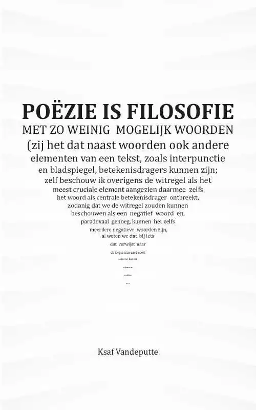

Poëzieleer
Welkom
Welkom op Poëzieleer, dé website waar je alles leert over de kunst van het dichten. Wat is poëzie, hoelang bestaat het al en welke verschillende poëzie vormen bestaan er allemaal? Op deze site kom je er alles over te weten! Deze website helpt je op weg als je nog weinig weet van poëzie en als je zelf poëzie zou willen maken.
Poëzie is een kunstvorm die vaak gewaardeerd wordt vanwege de diepgang, expressiviteit en schoonheid van taal. Hier zijn enkele redenen waarom mensen poëzie als leuk en waardevol beschouwen:
- Emotionele impact: Poëzie heeft het vermogen om diepe emoties op te roepen. De kracht van woorden kan gevoelens overbrengen op een manier die direct tot de lezer spreekt, waardoor een sterke emotionele impact ontstaat.
- Creativiteit: Poëzie moedigt creativiteit aan, zowel bij de dichter als de lezer. Het gebruik van metaforen, symbolen en beeldspraak zorgt voor een rijke en vaak abstracte taal, wat ruimte laat voor interpretatie en verbeelding.
- Taalspel: Dichters spelen vaak met de klank, ritme en betekenis van woorden. De vorm en structuur van een gedicht dragen bij aan de esthetische ervaring, en het ritme kan een bijzondere cadans creëren die de woorden extra krachtig maakt.
- Diepgang: Poëzie verkent vaak complexe onderwerpen op een diepgaande manier. Het stelt vragen over het leven, de natuur, menselijke relaties en filosofie. Het biedt een ruimte voor reflectie en contemplatie.
Kortom, poëzie biedt een unieke manier om de wereld te verkennen, te begrijpen en te waarderen door middel van de kunst van taal en expressie.
Inhoud
Dit is wat je allemaal te weten komt op onze website:
- - Wat is poëzie?
- - Soorten poëzie
- - Waar komt poëzie vandaan?
Meer willen weten?
Ben jij na het lezen van deze website helemaal weg van poëzie en kan je er geen genoeg van krijgen? Dan zijn hier een paar aanradingen van boeken die je nog meer vertellen over de kunst van poëzie:
Ga naar Schrijven Online en ontdek 5 boeken over de kracht van poëzie.